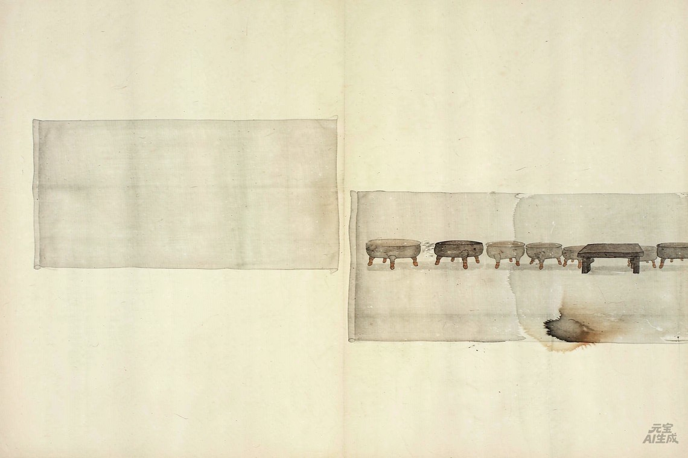
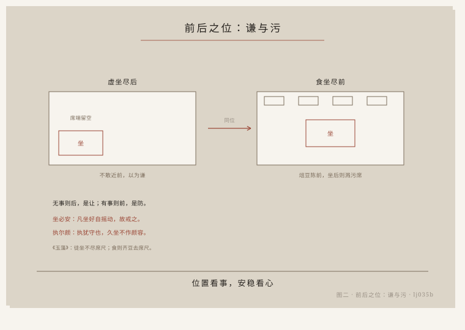

曲礼上 · 一·三十七 · 第 35 课
这一节讲坐的位置与坐的样子：空坐（非饮食之坐）尽量靠后，饮食之坐尽量靠前；坐要安稳，守住你的脸色。
说什么事：虚坐尽后，食坐尽前；坐必安，执尔颜。
落在哪一层：教。上节讲入席的路，这节讲坐定之后的位置与身体。
为何编在此位：一·三十四讲「怎么走过来」，此节讲「坐在哪里、怎么坐」。
【经】虛坐盡後，食坐盡前。坐必安，執爾顏。
虚坐 郑注：「虚，空也。空谓非饮食坐也。」疏：「尽后，不敢近前，以为谦也。」
食坐 郑注：「食坐尽前，为污席。」疏：「古者地铺席，而俎豆皆陈于席前之地，若坐近后则溅污席，故尽前也。」
两处引证 疏引《玉藻》：「徒坐不尽席尺」「读书、食则齐豆去席尺」。
坐必安 疏：「凡坐好自摇动，故戒之令必安坐。」
执尔颜 郑注：「执犹守也。」疏：「久坐好异，故必戒之宜如乡者无作颜容。」
空坐就尽量靠后，饮食之坐就尽量靠前。坐必定安稳，守住你的脸色。
四句两事：位置（前后）与身体（安稳、颜色）。礼连「坐得多靠前」都定了，因为前后一差，谦与污便分。
第一层 虚坐尽后：无事的坐，往后是谦 郑注先把「虚」解清：非饮食之坐。疏一句「不敢近前，以为谦也」——没有事的时候，你往前挪一寸，就是往前挤人。
第二层 食坐尽前：有事的坐，往前是防 同样一席，饮食之时却要尽前。理由极实：「若坐近后则溅污席。」俎豆陈在席前，坐后则汤汁溅席。所以这一前一后不是尊卑，是两件不同的事各有其位。
第三层 坐必安：不许摇 疏「凡坐好自摇动」。久坐而摇，是心不在；礼以「安」为坐之德。
第四层 执尔颜：久坐而色不变 郑注「执犹守也」，疏「久坐好异……宜如乡者无作颜容」——刚坐下时的神色，坐一个时辰还得是那个神色。此条最难：礼能管一刻，管不了一时。
与今日何干 今日开会，坐得越靠后越安全，坐得越靠前越显得积极；而身子摇晃、表情走神，几乎无人管。此节给的是一把很静的尺：位置看事，安稳看心。
| 左 | 右 |
|---|---|
| 虚坐尽后 | 非饮食坐；不敢近前，以为谦 |
| 食坐尽前 | 俎豆陈前，坐后则溅污席 |
| 坐必安 | 凡坐好自摇动，故戒之 |
| 执尔颜 | 执犹守也；久坐不作颜容 |

